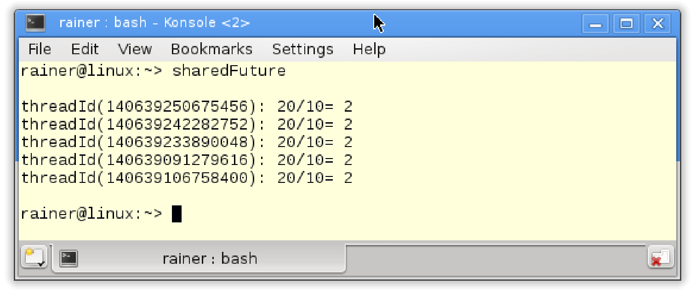

任务
除了线程之外，C++还有可以异步处理任务，这种方式处理任务需要包含<future>头文件。任务由一个参数化工作包和两个组件组成：promise和future，两者构建一条数据通道。promise执行工作包并将结果放入数据通道，对应的future可以获取结果，两个通信端可以在不同的线程中运行。特别的是future可以在之后的某个时间点获取结果，所以通过promise计算结果与通过future查询结果的步骤是分开的。
将任务视为通信端间的数据通道
任务的行为类似于通信点之间的数据通道。数据通道的一端称为promise，另一端称为future。这些端点可以存在于相同的线程中，也可以存在于不同的线程中。promise将其结果放入数据通道，future会在晚些时候把结果取走。

任务 vs. 线程
任务与线程有很大的不同。
// asyncVersusThread.cpp
#include <future>
#include <thread>
#include <iostream>
int main() {
std::cout << std::endl;
int res;
std::thread t([&] {res = 2000 + 11; });
t.join();
std::cout << "res: " << res << std::endl;
auto fut = std::async([] {return 2000 + 11; });
std::cout << "fut.get(): " << fut.get() << std::endl;
std::cout << std::endl;
}
线程t和std::async异步调用函数同时计算2000和11的和。主线程通过共享变量res获取其线程t的计算结果，并在第14行中显示它。第16行中，使用std::async在发送方(promise)和接收方(future)之间创建数据通道。future 变量使用fut.get()(第17行)，通过数据通道获得计算结果。fut.get 为阻塞调用。
下面是程序输出的结果：

基于这个程序，我想强调线程和任务之间的区别。
任务 vs. 线程
| 标准 | 线程 | 任务 |
|---|---|---|
| 构成元素 | 创建线程和子线程 | promise和future |
| 通讯方式 | 共享变量 | 通信通道 |
| 创建线程 | 必定创建 | 可选 |
| 同步方式 | 通过join()(等待) | 使用get阻塞式调用 |
| 线程中的异常 | 子线程和创建线程终止 | 返回promise的值 |
| 通信类型 | 变量值 | 变量值、通知和异常 |
线程需要包含<thread>头文件，任务需要包含<future>头文件。
创建线程和子线程之间的通信需要使用共享变量，任务通过其隐式的数据通道保护数据通信。因此，任务不需要互斥锁之类的保护机制。
虽然，可以使用共享变量(的可变)来在子线程及其创建线程之间进行通信，但任务的通信方式更为明确。future只能获取一次任务的结果(通过调用fut.get())，多次调用它会导致未定义的行为(而std::shared_future可以查询多次)。
创建线程需要等待子线程汇入。而使用fut.get()时，该调用将一直阻塞，直到获取结果为止。
如果子线程中抛出异常，创建的线程将终止，创建者和整个进程也将终止。相反，promise可以将异常发送给future，而future必须对异常进行处理。
一个promise可以对应于一个或多个future。它可以发送值、异常，或者只是通知，可以使用它们替换条件变量。
std::async 是创建future最简单的方法。
std::async
std::async的行为类似于异步函数调用，可调用带有参数的函数。std::async是一个可变参数模板，因此可以接受任意数量的参数。对std::async的调用会返回一个future 的对象fut。可以通过fut.get()获得结果。
std::async应该首选
C++运行时决定
std::async是否在独立的线程中执行，决策可能取决于可用的CPU内核的数量、系统的利用率或工作包的大小。通过使用std::async，只需要指定运行的任务，C++运行时会自动管理线程。
可以指定std::async的启动策略。
##启动策略
使用启动策略，可以显式地指定异步调用应该在同一线程(std::launch::deferred)中执行，还是在不同线程(std::launch::async)中执行。
及早求值与惰性求值是计算结果表达式的两种策略。在及早求值的情况下，立即计算表达式，而在惰性求值 的情况下，仅在需要时才计算表达式。及早求值通常称为贪婪求值，而惰性求值通常称为按需调用。使用惰性求值，可以节省时间和计算资源。
调用auto fut = std::async(std::launch::deferred，…)的特殊之处在于，promise可能不会立即执行，调用fut.get()时才执行对应的promise 。这意味着，promise只在future调用fut.get()时计算得到结果。
// asyncLazy.cpp
#include <chrono>
#include <future>
#include <iostream>
int main() {
std::cout << std::endl;
auto begin = std::chrono::system_clock::now();
auto asyncLazy = std::async(std::launch::deferred,
[] {return std::chrono::system_clock::now(); });
auto asyncEager = std::async(std::launch::async,
[] {return std::chrono::system_clock::now(); });
std::this_thread::sleep_for(std::chrono::seconds(1));
auto lazyStart = asyncLazy.get() - begin;
auto eagerStart = asyncEager.get() - begin;
auto lazyDuration = std::chrono::duration<double>(lazyStart).count();
auto eagerDuration = std::chrono::duration<double>(eagerStart).count();
std::cout << "asyncLazy evaluated after : " << lazyDuration
<< " seconds." << std::endl;
std::cout << "asyncEager evaluated after : " << eagerDuration
<< " seconds." << std::endl;
std::cout << std::endl;
}
两个std::async调用(第13行和第16行)都返回当前时间点。但是，第一个调用是lazy，第二个调用是eager。第21行中的asyncLazy.get()调用触发了第13行promise的执行——短睡一秒(第19行)。这对于asyncEager来说是不存在的，asyncEager.get()会立即获取执行结果。
下面就是该程序输出的结果：

不必把future绑定到变量上。
发后即忘(Fire and Forget)
发后即忘是比较特殊的future。因为其future不受某个变量的约束，所以只是在原地执行。对于一个发后即忘的future，相应的promise运行在一个不同的线程中，所以可以立即开始(这是通过std::launch::async策略完成的)。
我们对普通的future和发后即忘的future进行比较。
auto fut= std::async([]{ return 2011; });
std::cout << fut.get() << std::endl;
std::async(std::launch::async,
[]{ std::cout << "fire and forget" << std::endl; });
发后即忘的future看起来很有美好，但有一个很大的缺点。std::async创建的future会等待promise完成，才会进行析构。这种情况下，等待和阻塞就没有太大的区别了。future的析构函数会中阻塞程序的进程，当使用发后即忘的future时，这一点变得更加明显，看起来程序上是并发的，但实际上是串行运行的。
// fireAndForgetFutures.cpp
#include <chrono>
#include <future>
#include <iostream>
#include <thread>
int main() {
std::cout << std::endl;
std::async(std::launch::async, [] {
std::this_thread::sleep_for(std::chrono::seconds(2));
std::cout << "first thread" << std::endl;
});
std::async(std::launch::async, [] {
std::this_thread::sleep_for(std::chrono::seconds(2));
std::cout << "second thread" << std::endl; }
);
std::cout << "main thread" << std::endl;
std::cout << std::endl;
}
程序在线程中执行两个promise，这样就会产生发后即忘的future。future在析构函数中阻塞线程，直到相关的promise完成。promise是按照源代码顺序执行的，执行顺序与执行时间无关。

std::async是一种方便的机制，可用于在分解较大的计算任务。
并行计算
标量乘积的计算可分布在四个异步调用中。
// dotProductAsync.cpp
#include <iostream>
#include <future>
#include <random>
#include <vector>
#include <numeric>
using namespace std;
static const int NUM = 100000000;
long long getDotProduct(vector<int>& v, vector<int>& w) {
auto vSize = v.size();
auto future1 = async([&] {
return inner_product(&v[0], &v[vSize / 4], &w[0], 0LL);
});
auto future2 = async([&] {
return inner_product(&v[vSize / 4], &v[vSize / 2], &w[vSize / 4], 0LL);
});
auto future3 = async([&] {
return inner_product(&v[vSize / 2], &v[vSize * 3 / 4], &w[vSize / 2], 0LL);
});
auto future4 = async([&] {
return inner_product(&v[vSize * 3 / 4], &v[vSize], &w[vSize * 3 / 4], 0LL);
});
return future1.get() + future2.get() + future3.get() + future4.get();
}
int main() {
cout << endl;
random_device seed;
// generator
mt19937 engine(seed());
// distribution
uniform_int_distribution<int> dist(0, 100);
// fill the vector
vector<int> v, w;
v.reserve(NUM);
w.reserve(NUM);
for (int i = 0; i < NUM; ++i) {
v.push_back(dist(engine));
w.push_back(dist(engine));
}
cout << "getDotProduct(v, w): " << getDotProduct(v, w) << endl;
cout << endl;
}
该程序使用了随机库和时间库，创建两个向量v和w并用随机数填充(第50-56行)，每个向量添加(第53 - 56行)1亿个元素。第54和55行中的dist(engine)生成均匀分布在0到100之间的随机数。标量乘积的计算在getDotProduct中进行(第13 - 34行)。内部实现中，std::async使用标准库算法std::inner_product。最后，使用future获取结果进行相加，就得到了最终结果。

std::packaged_task通常也用于并发。
std::packaged_task
std::packaged_task是用于异步调用的包装器。通过pack.get_future() 可以获得相关的future。可以使用可调用操作符pack(pack())执行std::packaged_task。
处理std::packaged_task通常包括四个步骤:
I. 打包:
std::packaged_task<int(int, int)> sumTask([](int a, int b){ return a + b; });
II. 创建future:
std::future<int> sumResult= sumTask.get_future();
III. 执行计算:
sumTask(2000, 11);
IV. 查询结果:
sumResult.get();
下面的示例，展示了这四个步骤。
// packagedTask.cpp
#include <utility>
#include <future>
#include <iostream>
#include <thread>
#include <deque>
class SumUp {
public:
int operator()(int beg, int end) {
long long int sum{ 0 };
for (int i = beg; i < end; ++i) sum += i;
return static_cast<int>(sum);
}
};
int main() {
std::cout << std::endl;
SumUp sumUp1;
SumUp sumUp2;
SumUp sumUp3;
SumUp sumUp4;
// wrap the task
std::packaged_task<int(int, int)> sumTask1(sumUp1);
std::packaged_task<int(int, int)> sumTask2(sumUp2);
std::packaged_task<int(int, int)> sumTask3(sumUp3);
std::packaged_task<int(int, int)> sumTask4(sumUp4);
// create the futures
std::future<int> sumResult1 = sumTask1.get_future();
std::future<int> sumResult2 = sumTask2.get_future();
std::future<int> sumResult3 = sumTask3.get_future();
std::future<int> sumResult4 = sumTask4.get_future();
// push the task on the container
std::deque<std::packaged_task<int(int, int)>> allTasks;
allTasks.push_back(std::move(sumTask1));
allTasks.push_back(std::move(sumTask2));
allTasks.push_back(std::move(sumTask3));
allTasks.push_back(std::move(sumTask4));
int begin{ 1 };
int increment{ 2500 };
int end = begin + increment;
// preform each calculation in a separate thread
while (!allTasks.empty()) {
std::packaged_task<int(int, int)> myTask = std::move(allTasks.front());
allTasks.pop_front();
std::thread sumThread(std::move(myTask), begin, end);
begin = end;
end += increment;
sumThread.detach();
}
// pick up the results
auto sum = sumResult1.get() + sumResult2.get() +
sumResult3.get() + sumResult4.get();
std::cout << "sum of 0 .. 10000 = " << sum << std::endl;
std::cout << std::endl;
}
这段程序的是计算从0到10000的整数和。创建四个std::packaged_task的对象，并且每个std::packaged_task有自己的线程，并使用future来汇总结果。当然，也可以直接使用Gaußschen Summenformel(高斯求和公式)。真奇怪，我没有找到英文网页。(译者注：打开网页就是最熟悉的高斯求和公式，也就是等差数列求和公式。翻了下维基百科，确实没有相关的英文页面。)
I. 打包任务：程序将工作包打包进std::packaged_task(第28 - 31行)的实例中，工作包就是SumUp的实例(第9 - 16行)，使用函数操作符完成任务(第11 - 15行)。函数操作符将beg到end - 1的所有整数相加并返回结果。第28 - 31行中的std::packaged_task实例可以处理需要两个int参数的函数调用，并返回一个int: int(int, int)类型的任务包。
II.创建future：第34到37行中，使用std::packaged_task创建future对象，这时std::packaged_task对象属于通信通道中的promise。future的类型有明确定义：std::future<int> sumResult1 = sumTask1.get_future()，也可以让编译器来确认future的具体类型：auto sumResult1 sumTask1.get_future()。
III. 进行计算：开始计算。将任务包移动到std::deque(第40 - 44行)中，while循环(第51 - 58行)会执行每个任务包。为此，将std::deque的队头任务包移动到一个std::packaged_task实例中(第52行)，并将这个实例移动到一个新线程中(第54行)，并让这个线程在后台运行(第57行)。因为packaged_task对象不可复制的，所以会在52和54行中使用move语义。这个限制不仅适用于所有的promise实例，但也适用于future和线程实例。但有一个例外：std::shared_future。
IV. 查询结果：最后一步中，从每个future获取计算的结果，并把它们加起来(第61行)。

下表展示std::packaged_task pack的接口
| 成员函数 | 函数描述 |
|---|---|
pack.swap(pack2)和std::swap(pack, pack2) | 交换对象 |
pack.valid() | 检查对象中的函数是否合法 |
pack.get_future() | 返回future |
pack.make_ready_at_thread_exit(ex) | 执行的函数，如果线程还存在，那么结果还是可用的 |
pack.reset() | 重置任务的状态，擦除之前执行的结果 |
与std::async或std::promise相比，std::packaged_task可以复位并重复使用。下面的程序展示了std::packaged_task的“特殊”使用方式。
// packagedTaskReuse.cpp
#include <functional>
#include <future>
#include <iostream>
#include <utility>
#include <vector>
void calcProducts(std::packaged_task<int(int, int)>& task,
const std::vector<std::pair<int, int>>& pairs) {
for (auto& pair : pairs) {
auto fut = task.get_future();
task(pair.first, pair.second);
std::cout << pair.first << " * " << pair.second << " = " << fut.get()<<
std::endl;
task.reset();
}
}
int main() {
std::cout << std::endl;
std::vector<std::pair<int, int>> allPairs;
allPairs.push_back(std::make_pair(1, 2));
allPairs.push_back(std::make_pair(2, 3));
allPairs.push_back(std::make_pair(3, 4));
allPairs.push_back(std::make_pair(4, 5));
std::packaged_task<int(int, int)> task{ [](int fir, int sec) {
return fir * sec; }
};
calcProducts(task, allPairs);
std::cout << std::endl;
std::thread t(calcProducts, std::ref(task), allPairs);
t.join();
std::cout << std::endl;
}
函数calcProduct(第9行)有两个参数：task和pairs。使用任务包task来计算pairs中的每个整数对的乘积(第13行)，并在第16行重置任务task。这样，calcProduct就能在主线程(第34行)和另外开启的线程(第38行)中运行。下面是程序的输出。

std::promise和std::future
std::promise和std::future可以完全控制任务。
promise和future是一对强有力的组合。promise可以将值、异常或通知放入数据通道。一个promise可以对应多个std::shared_future对象。
下面是std::promise和std::future用法的示例。两个通信端点都可以在不同的的线程中，因此通信可以在线程间发生。
// promiseFuture.cpp
#include <future>
#include <iostream>
#include <thread>
#include <utility>
void product(std::promise<int>&& intPromise, int a, int b) {
intPromise.set_value(a * b);
}
struct Div {
void operator()(std::promise<int>&& intPromise, int a, int b) const {
intPromise.set_value(a / b);
}
};
int main() {
int a = 20;
int b = 10;
std::cout << std::endl;
// define the promises
std::promise<int> prodPromise;
std::promise<int> divPromise;
// get the futures
std::future<int> prodResult = prodPromise.get_future();
std::future<int> divResult = divPromise.get_future();
// calculate the result in a separate thread
std::thread prodThread(product, std::move(prodPromise), a, b);
Div div;
std::thread divThread(div, std::move(divPromise), a, b);
// get the result
std::cout << "20*10 = " << prodResult.get() << std::endl;
std::cout << "20/10 = " << divResult.get() << std::endl;
prodThread.join();
divThread.join();
std::cout << std::endl;
}
将函数product(第8 -10行)、prodPromise(第32行)以及数字a和b放入线程Thread prodThread(第36行)中。prodThread的第一个参数需要一个可调用的参数，上面程序中就是函数乘积函数。函数需要一个类型右值引用的promise(std::promise<int>&& intPromise)和两个数字。std::move(第36行)创建一个右值引用。剩下的就简单了，divThread(第38行)将a和b分开传入。
future通过prodResult.get()和divResult.get()获取结果

std::promise
std::promise允许设置一个值、一个通知或一个异常。此外，promise可以以延迟的方式提供结果。
std::promise prom的成员函数
| 成员函数 | 函数描述 |
|---|---|
prom.swap(prom2)和std::swap(prom, prom2) | 交换对象 |
prom.get_future() | 返回future |
prom.set_value(val) | 设置值 |
prom.set_exception(ex) | 设置异常 |
prom.set_value_at_thread_exit(val) | promise退出前存储该值 |
prom.set_exception_at_thread_exit(ex) | promise退出前存储该异常 |
如果多次对promise设置值或异常，则会抛出std::future_error。
std::future
std::future可以完成的事情有：
- 从promise中获取值。
- 查询promise值是否可获取。
- 等待promise通知，这种等待可以用一个时间段或一个绝对的时间点来完成。
- 创建共享future(
std::shared_future)。
future实例fut的成员函数
| 成员函数 | 函数描述 |
|---|---|
fut.share() | 返回std::shared_future |
fut.get() | 返回可以是值或异常 |
fut.valid() | 检查当前实例是否可用调用fut.get()。使用get()之后，返回false |
fut.wait() | 等待结果 |
fut.wait_for(relTime) | 在relTime时间段内等待获取结果，并返回std:: future_status实例 |
fut.wait_until(absTime) | 在absTime时间点前等待获取结果，并返回std:: future_status实例 |
与wait不同，wait_for和wait_until会返回future的状态。
std::future_status
future和共享future的wait_for和wait_until成员函数将返回其状态。有三种可能:
enum class future_status {
ready,
timeout,
deferred
};
下表描述了每种状态:
| 状态 | 描述 |
|---|---|
| deferred | 函数还未运行 |
| ready | 结果已经准备就绪 |
| timeout | 结果超时得到，视为过期 |
使用wait_for或wait_until可以一直等到相关的promise完成。
// waitFor.cpp
#include <iostream>
#include <future>
#include <thread>
#include <chrono>
using namespace std::literals::chrono_literals;
void getAnswer(std::promise<int> intPromise) {
std::this_thread::sleep_for(3s);
intPromise.set_value(42);
}
int main() {
std::cout << std::endl;
std::promise<int> answerPromise;
auto fut = answerPromise.get_future();
std::thread prodThread(getAnswer, std::move(answerPromise));
std::future_status status{};
do {
status = fut.wait_for(0.2s);
std::cout << "... doing something else" << std::endl;
} while (status != std::future_status::ready);
std::cout << std::endl;
std::cout << "The Answer: " << fut.get() << '\n';
prodThread.join();
std::cout << std::endl;
}
在futurefut在等待promise时，可以执行其他操作。

如果多次获取futurefut的结果，会抛出std::future_error异常。
promise和future是一对一的关系，而std::shared_future支持一个promise 对应多个future。
std::shared_future
创建std::shared_future 的两种方式：
- 通过promise实例
prom创建std::shared_future:std::shared_future<int> fut = prom.get_future()。 - 使用
fut的fut.share()进行创建。执行了fut.share()后，fut.valid()会返回false。
共享future是与相应的promise相关联的，可以获取promise的结果。共享future与std::future有相同的接口。
除了有std::future的功能外，std::shared_future还允许和其他future查询关联promise的值。
std::shared_future的操作很特殊，下面的代码中就直接创建了一个std::shared_future。
// sharedFuture.cpp
#include <future>
#include <iostream>
#include <thread>
#include <utility>
std::mutex coutMutex;
struct Div {
void operator()(std::promise<int>&& intPromise, int a, int b) {
intPromise.set_value(a / b);
}
};
struct Requestor {
void operator()(std::shared_future<int> shaFut) {
// lock std::cout
std::lock_guard<std::mutex> coutGuard(coutMutex);
// get the thread id
std::cout << "threadId(" << std::this_thread::get_id() << "): ";
std::cout << "20/10= " << shaFut.get() << std::endl;
}
};
int main() {
std::cout << std::endl;
// define the promises
std::promise<int> divPromise;
// get the futures
std::shared_future<int> divResult = divPromise.get_future();
// calculate the result in a separate thread
Div div;
std::thread divThread(div, std::move(divPromise), 20, 10);
Requestor req;
std::thread sharedThread1(req, divResult);
std::thread sharedThread2(req, divResult);
std::thread sharedThread3(req, divResult);
std::thread sharedThread4(req, divResult);
std::thread sharedThread5(req, divResult);
divThread.join();
sharedThread1.join();
sharedThread2.join();
sharedThread3.join();
sharedThread4.join();
sharedThread5.join();
std::cout << std::endl;
}
promise和future的工作包都是函数对象。第46行中将divPromise移动到线程divThread中执行，因此会将std::shared_future复制到5个线程中(第49 - 53行)。与只能移动的std::future对象不同，可以std::shared_future对象可以进行复制。
主线程在第57到61行等待子线程完成它们的任务。

前面提到过，可以通过使用std::future的成员函数创建std::shared_future。我们把上面的代码改一下。
// sharedFutureFromFuture.cpp
#include <future>
#include <iostream>
#include <thread>
#include <utility>
std::mutex coutMutex;
struct Div {
void operator()(std::promise<int>&& intPromise, int a, int b) {
intPromise.set_value(a / b);
}
};
struct Requestor {
void operator()(std::shared_future<int> shaFut) {
// lock std::cout
std::lock_guard<std::mutex> coutGuard(coutMutex);
// get the thread id
std::cout << "threadId(" << std::this_thread::get_id() << "): ";
std::cout << "20/10= " << shaFut.get() << std::endl;
}
};
int main() {
std::cout << std::boolalpha << std::endl;
// define the promises
std::promise<int> divPromise;
// get the futures
std::future<int> divResult = divPromise.get_future();
std::cout << "divResult.valid(): " << divResult.valid() << std::endl;
// calculate the result in a separate thread
Div div;
std::thread divThread(div, std::move(divPromise), 20, 10);
std::cout << "divResult.valid(): " << divResult.valid() << std::endl;
std::shared_future<int> sharedResult = divResult.share();
std::cout << "divResult.valid(): " << divResult.valid() << "\n\n";
Requestor req;
std::thread sharedThread1(req, sharedResult);
std::thread sharedThread2(req, sharedResult);
std::thread sharedThread3(req, sharedResult);
std::thread sharedThread4(req, sharedResult);
std::thread sharedThread5(req, sharedResult);
divThread.join();
sharedThread1.join();
sharedThread2.join();
sharedThread3.join();
sharedThread4.join();
sharedThread5.join();
std::cout << std::endl;
}
std::future(第44行和第50行)前两次调用divResult.valid()都返回true。第52行执行divResult.share()之后，因为该操作使得状态转换为共享，所以在执行到第54行时，程序会返回false。
异常
如果std::async或std::packaged_task的工作包抛出错误，则异常会存储在共享状态中。当futurefut调用fut.get()时，异常将重新抛出。
std::promise prom提供了相同的功能，但是它有一个成员函数prom.set_value(std::current_exception())可以将异常设置为共享状态。
数字除以0是未定义的行为，函数executeDivision显示计算结果或异常。
// promiseFutureException.cpp
#include <exception>
#include <future>
#include <iostream>
#include <thread>
#include <utility>
#ifdef WIN32
#include <string>
#endif
struct Div {
void operator()(std::promise<int>&& intPromise, int a, int b){
try {
if (b == 0) {
std::string errMess = std::string("Illegal division by zero: ") +
std::to_string(a) + "/" + std::to_string(b);
throw std::runtime_error(errMess);
}
intPromise.set_value(a / b);
}
catch (...) {
intPromise.set_exception(std::current_exception());
}
}
};
void executeDivision(int nom, int denom) {
std::promise<int> divPromise;
std::future<int> divResult = divPromise.get_future();
Div div;
std::thread divThread(div, std::move(divPromise), nom, denom);
// get the result or the exception
try {
std::cout << nom << "/" << denom << " = " << divResult.get() << std::endl;
}
catch (std::runtime_error& e) {
std::cout << e.what() << std::endl;
}
divThread.join();
}
int main() {
std::cout << std::endl;
executeDivision(20, 0);
executeDivision(20, 10);
std::cout << std::endl;
}
这个程序中，promise会处理分母为0的情况。如果分母为0，则在第24行中将异常设置为返回值：intPromise.set_exception(std::current_exception())。future需要在try-catch中处理异常(第37 - 42行)。
下面是程序的输出。

std::current_exception和std::make_exception_ptr
std::current_exception()捕获当前异常对象，并创建一个std:: exception_ptr。std::exception_ptr保存异常对象的副本或引用。如果在没有异常处理时调用该函数，则返回一个空的std::exception_ptr。为了不在try/catch中使用
intPromise.set_exception(std::current_exception())检索抛出的异常，可以直接调用intPromise.set_exception(std::make_exception_ptr(std::runtime_error(errMess)))。
如果在std::promise销毁之前没有调用设置类的成员函数，或是在std::packaged_task调用它，那么std::future_error异常和错误代码std::future_errc::broken_promise将存储在共享future中。
通知
任务是条件变量的一种替代方式。如果使用promise和future来同步线程，它们与条件变量有很多相同之处。大多数时候，promise和future是更好的选择。
在看例子之前，先了解下任务和条件变量的差异。
| 对比标准 | 条件变量 | 任务 |
|---|---|---|
| 多重同步 | Yes | No |
| 临界区保护 | Yes | No |
| 接收错误处理机制 | No | Yes |
| 伪唤醒 | Yes | No |
| 未唤醒 | Yes | No |
与promise和future相比，条件变量的优点是可以多次同步线程，而promise只能发送一次通知，因此必须使用更多promise和future对，才能模拟出条件变量的功能。如果只同步一次，那条件变量正确的使用方式或许将更具大的挑战。promise和future对不需要共享变量，所以不需要锁，并且不大可能出现伪唤醒或未唤醒的情况。除了这些，任务还可以处理异常。所以，在同步线程上我会更偏重于选择任务，而不是条件变量。
还记得使用条件变量有多难吗？如果忘记了，这里展示了两个线程同步所需的关键部分。
void waitingForWork(){
std::cout << "Worker: Waiting for work." << std::endl;
std::unique_lock<std::mutex> lck(mutex_);
condVar.wait(lck, []{ return dataReady; });
doTheWork();
std::cout << "Work done." << std::endl;
}
void setDataReady(){
std::lock_guard<std::mutex> lck(mutex_);
dataReady=true;
std::cout << "Sender: Data is ready." << std::endl;
condVar.notify_one();
}
函数setDataReady为同步通知，函数waitingForWork为同步等待。
使用任务完成相同的工作流程。
// promiseFutureSynchronise.cpp
#include <future>
#include <iostream>
#include <utility>
void doTheWork() {
std::cout << "Processing shared data." << std::endl;
}
void waitingForWork(std::future<void>&& fut) {
std::cout << "Worker: Waiting for work." << std::endl;
fut.wait();
doTheWork();
std::cout << "Work done." << std::endl;
}
void setDataReady(std::promise<void>&& prom) {
std::cout << "Sender: Data is ready." << std::endl;
prom.set_value();
}
int main() {
std::cout << std::endl;
std::promise<void> sendReady;
auto fut = sendReady.get_future();
std::thread t1(waitingForWork, std::move(fut));
std::thread t2(setDataReady, std::move(sendReady));
t1.join();
t2.join();
std::cout << std::endl;
}
是不是非常简单？
通过sendReady(第32行)获得了一个futurefut(第33行)，promise使用其返回值void (std::promise<void> sendReady)进行通信，并且只能够发送通知。两个通信端点分别移动到线程t1和t2中(第35行和第36行)，调用fut.wait()(第15行)等待promise的通知(prom.set_value()(第24行))。
程序结构和输出，与条件变量章节程序的输出一致。